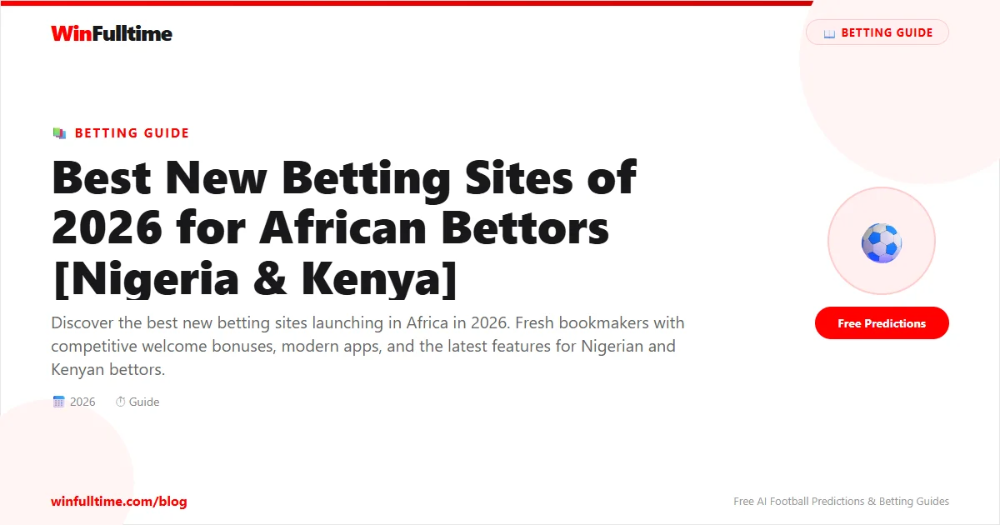

The African betting market is growing fast, and new bookmakers are entering Nigeria and Kenya with aggressive welcome bonuses, modern mobile apps, and innovative features to compete with established giants like Bet9ja and SportPesa. These new platforms often offer better value for new customers because they need to build their user base. Here are the best new betting sites available to African bettors in 2026.
Melbet launched in Nigeria in late 2025 and has quickly become one of the most popular new betting platforms. Their welcome bonus of 200% up to ₦100,000 is one of the most generous available to Nigerian bettors. The platform offers over 400 daily betting markets across 30+ sports, with strong coverage of the NPFL, Premier League, and Champions League.
The Melbet app is available for Android via direct APK download and works well on 3G and 4G networks. The interface is clean and modern, though not as polished as SportyBet. Melbet accepts bank transfers, cards, and cryptocurrency deposits. Withdrawal times are competitive at 2-24 hours for most methods.
BetKing launched operations in Nigeria in 2024 and has grown rapidly thanks to strong retail presence and competitive online offerings. Their welcome package offers 150% up to ₦50,000 plus free bets on your first accumulator. BetKing's "King's Acca" promotion automatically boosts accumulator odds by up to 12%.
The BetKing app is Android-only but is well-optimised for Nigerian networks. The platform covers all major Nigerian banking options including bank transfers, USSD, and card payments. BetKing is licensed by the Lagos State Lotteries Board (LSLB), the same regulator as Bet9ja, providing a similar level of regulatory oversight.
BangBet is a relatively new entrant in both Nigeria and Kenya that focuses heavily on the live betting experience. Their in-play platform updates odds in real-time and offers over 200 live events daily. The "BangCash" feature allows instant cash-out on live bets, and their "Live Bet Builder" lets you combine multiple in-play markets from the same match.
BangBet's welcome bonus is 100% up to ₦50,000 in Nigeria and KES 5,000 in Kenya. The app is available on Android and provides an excellent mobile web experience for iOS users. BangBet is licensed in both Nigeria and Kenya, making it one of the few new platforms available in both markets simultaneously.
22Bet entered the African market in 2024 and has impressed with its massive selection of over 1,000 daily betting markets. They cover everything from the NPFL and Kenyan Premier League to niche markets like eSports, virtual sports, and political betting. Their welcome bonus is 100% up to ₦50,000 in Nigeria and includes free bet tokens for your first week.
The 22Bet platform is available across Nigeria, Kenya, Ghana, and Uganda. Their Android app is functional though not remarkable, and their mobile website is one of the best in the market. 22Bet supports over 50 payment methods including M-Pesa, Airtel Money, bank transfers, and multiple cryptocurrencies.
PariPesa is a new betting platform that has positioned itself as the go-to option for cryptocurrency bettors in Africa. They accept Bitcoin, Ethereum, USDT, and several other cryptocurrencies with zero deposit fees and instant processing. Their welcome bonus offers 200% up to ₦150,000 in Nigerian Naira equivalent when you deposit with crypto.
Beyond crypto, PariPesa offers standard betting markets including strong NPFL and Kenyan Premier League coverage. The platform is available in Nigeria and Kenya, with plans to expand to Ghana and Uganda. Their app is Android-only but provides a smooth experience with fast bet placement and quick withdrawal processing.
| Feature | Melbet | BetKing | BangBet | 22Bet | PariPesa |
|---|---|---|---|---|---|
| Welcome Bonus | 200% up to ₦100K | 150% up to ₦50K | 100% up to ₦50K | 100% up to ₦50K | 200% up to ₦150K |
| Daily Markets | 400+ | 200+ | 300+ | 1000+ | 300+ |
| Available In | Nigeria | Nigeria | Nigeria, Kenya | 4+ countries | Nigeria, Kenya |
| Android App | Yes | Yes | Yes | Yes | Yes |
| iOS App | No | No | Mobile Web | Mobile Web | No |
| Crypto Deposits | Yes | No | No | Yes | Yes |
| Live Streaming | No | No | Yes | Yes | No |
| M-Pesa | No | No | Yes | Yes | No |
| Cash Out | Yes | Yes | Yes (Instant) | Yes | Yes |
Our Verdict: If you want the biggest welcome bonus, go with Melbet or PariPesa. If you want the widest market selection, 22Bet is the best choice. For live betting, BangBet stands out. And if you prefer a platform with a Nigerian retail presence, BetKing is a solid option.
Generate optimized accumulator combinations from today's AI-powered predictions. Set your target odds and get instant ticket suggestions.
Free Ticket Builder →